Inverse rendering remains a core challenge in graphics and vision, especially in the snapshot configurations required for lightweight desktop workflows, where the per-frame information budget is highly constrained. Previous inverse rendering work explores various available dimensions for enriching the per-shot information, including temporal modulation, spectral encoding, and polarization. In this work, we introduce polarimetric display inverse rendering, using an LCD to project a linearly polarized RGB binary pattern and an RGB polarization camera augmented with a quarter-wave plate to acquire color-polarimetric measurements in a single shot. A feed-forward transformer maps these measurements to per-pixel normal, albedo, roughness, and metallicity. To overcome training data scarcity, we expand a limited set of measured polarimetric bidirectional reflectance distribution functions via a generative manifold. Evaluations on a real desktop setup demonstrate accurate inverse rendering across diverse scenes, outperforming existing approaches.
An LCD emits linearly polarized light by construction, so it doubles as a programmable spatial light source and a polarized illuminator with no extra optics on the illumination side. We display an RGB binary pattern: the right half of the monitor drives the red channel, the left half the green channel, and the upper half the blue channel, giving cyan, magenta, green and red regions that probe the scene from three lighting directions at once. On the sensor side, a polarization camera alone recovers only linear Stokes components, so we mount a quarter-wave plate in front of the lens, which trades S2 for S3 and makes circular polarization measurable in the same shot.
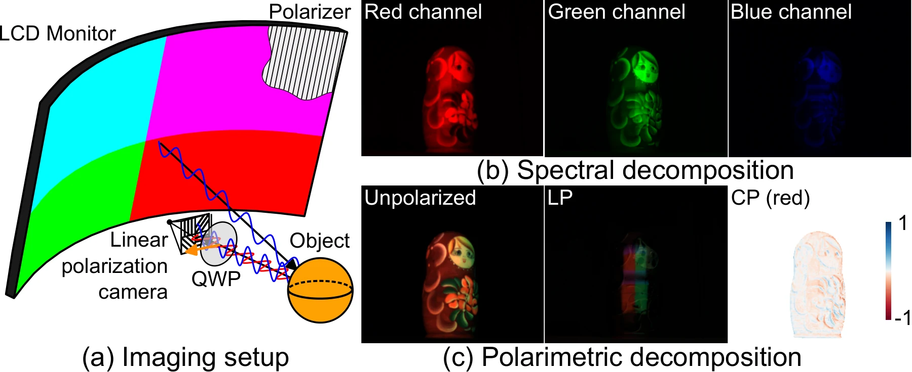
Display–camera imaging system. (a) Polarizers are mounted on both the illumination and the sensor, enabling polarimetric imaging. (b) The illumination pattern encodes distinct shading cues across the RGB channels. (c) A captured image decomposed into unpolarized, linearly polarized (LP), and circularly polarized (CP) components.
For each spectral channel the raw capture is decomposed into three cues: Iunpol = S0 − S1 (diffuse dominant), ILP = −S1 (specular sensitive), and ICP = S3/(S0+ε) (a dielectric–metal cue). Three channels times three polarization states give the nine measurement maps that the network consumes.
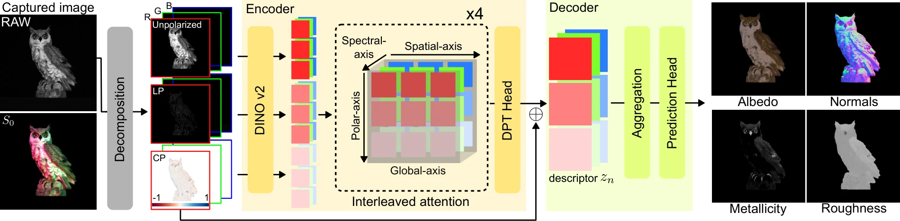
Overview of feed-forward inverse rendering. Our framework takes a single spectro-polarimetrically encoded RAW image as input and decomposes it into nine measurements spanning RGB lighting directions and polarization states. An encoder–decoder transformer then estimates PBR parameter maps in a feed-forward manner.
Measured pBRDFs are scarce. We represent them in a compact PCA basis, learn a generative manifold over the PCA coefficients conditioned on PBR parameters, and sample new physically valid pBRDFs from it — 2,000 instances after filtering with the Givens–Kostinski and Cloude criteria. These are assigned to Objaverse geometry and rendered in Mitsuba 3, yielding 12k training scenes.
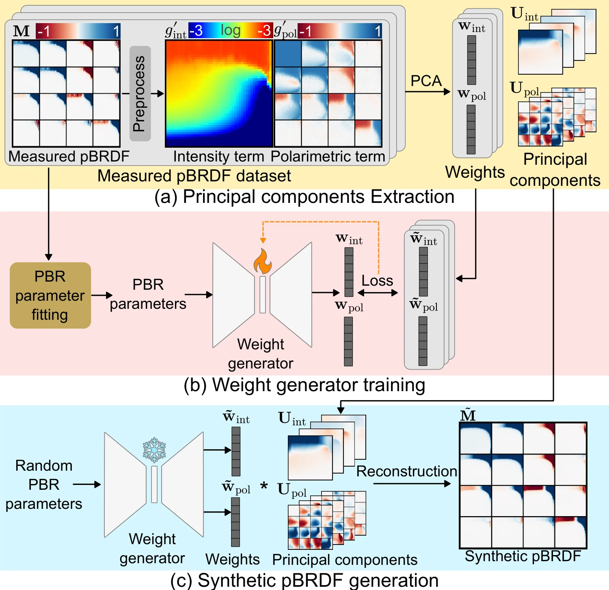
Overview of the expanded pBRDF dataset generation pipeline. (a) Principal components and corresponding weights are extracted from a measured pBRDF dataset via PCA, separately for intensity and polarimetric components. (b) A weight generator is trained to predict PCA weights conditioned on input PBR parameters. (c) After training, the generator samples weights from randomly sampled PBR parameters, and synthetic pBRDFs are reconstructed using the precomputed principal components from (a).
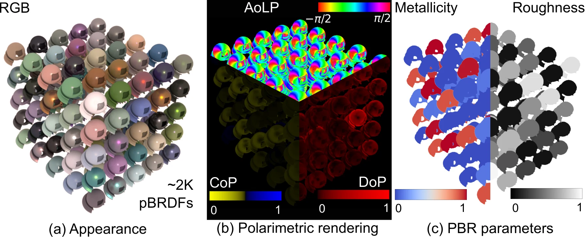
Expanded pBRDF instances. Rendered examples of synthesized pBRDFs showing diverse reflectance. (a) RGB appearance under unpolarized illumination. (b) Polarimetric rendering visualized as AoLP, DoP and CoP. (c) PBR parameter maps fitted to each synthesized pBRDF and used as ground-truth supervision during training.
We compare against LINO-PBR (the inverse rendering variant of LINO-UniPS), DiffusionRenderer, and RGB-X. These methods do not assume spectral multiplexing, so they receive images under white illumination. LINO-PBR additionally supports multiple inputs; its four-light setting is listed separately as a multi-shot reference. Scale-invariant metrics (“si-”) are computed after aligning the prediction to the reference with a single global intensity scale.
Synthetic dataset. Ground-truth PBR maps available.
| Method | Albedo PSNR ↑ | Albedo LPIPS ↓ | Albedo si-PSNR ↑ | Albedo si-LPIPS ↓ | Roughness RMSE ↓ | Metallicity RMSE ↓ | Normal MAE ↓ |
|---|---|---|---|---|---|---|---|
| DiffusionRenderer | 13.03 | 0.4039 | 17.61 | 0.3557 | 0.6999 | 0.6317 | 29.73 |
| RGB-X | 4.75 | 0.4884 | 18.89 | 0.3199 | 0.3596 | 0.5529 | 40.47 |
| LINO-PBR (N = 1) | 14.80 | 0.4446 | 16.56 | 0.4175 | 0.6658 | 0.6476 | 35.64 |
| Ours | 23.90 | 0.1788 | 24.48 | 0.1736 | 0.0781 | 0.2395 | 11.45 |
| LINO-PBR (N = 4)† | 15.60 | 0.3708 | 17.77 | 0.3422 | 0.3746 | 0.5843 | 18.23 |
† Four-shot input, shown for reference. Best in red bold, second best underlined.
Real data. Reconstruction error between the observation and the re-render from the estimated PBR maps, averaged over 12 target patterns.
| Method | si-PSNR ↑ | si-LPIPS ↓ | si-RMSE ↓ | si-MSE ↓ |
|---|---|---|---|---|
| DiffusionRenderer | 16.31 | 0.2729 | 0.1652 | 0.0318 |
| RGB-X | 12.75 | 0.4121 | 0.2428 | 0.0651 |
| LINO-PBR (N = 1) | 19.16 | 0.1949 | 0.1220 | 0.0186 |
| Ours | 20.15 | 0.1690 | 0.1050 | 0.0126 |
| LINO-PBR (N = 4)† | 19.18 | 0.1493 | 0.1223 | 0.0183 |
Real-world normal accuracy. Mean angular error against structured-light scanner geometry.
| Method | Cat MAE ↓ | Chicken MAE ↓ |
|---|---|---|
| DiffusionRenderer | 25.67° | 38.50° |
| RGB-X | 17.34° | 24.84° |
| LINO-PBR (N = 1) | 20.26° | 26.40° |
| Ours | 14.20° | 20.47° |
The same observed intensity can be explained by many combinations of albedo, specular reflection, roughness and metallicity, so a method can reproduce the input image while predicting a decomposition that falls apart once the illumination changes. We therefore render the estimated materials both under the known display pattern and under an out-of-distribution point light.
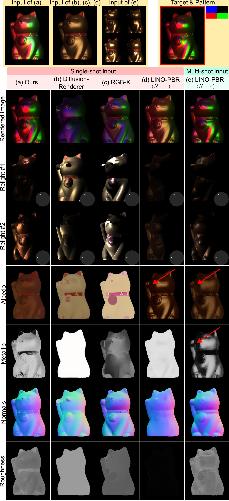
Comparison on a real scene. All baselines in (b)–(e) fail to consistently identify the non-metallic ear and necklace. Arrows mark regions where characteristic grazing-angle shading and specular highlights of metallic surfaces are incorrectly baked into the estimated albedo maps.
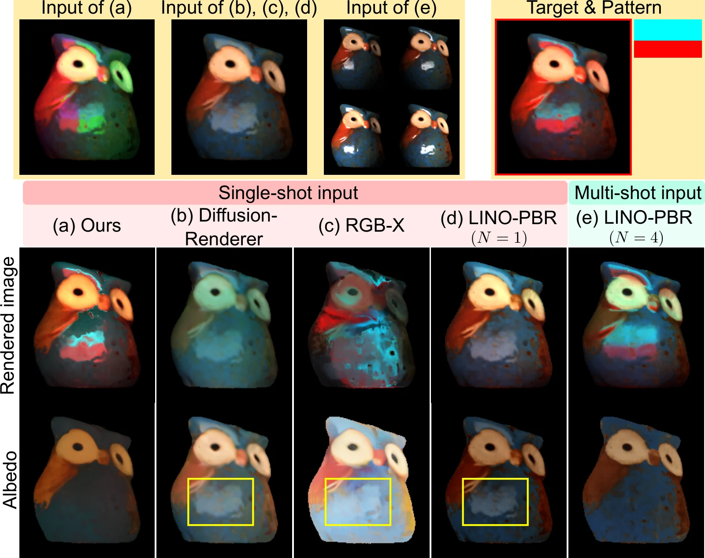
Diffuse–specular disambiguation. The conventional single-image configurations in (b), (c) and (d) lack independently distinguishable illumination components within the captured image and often encode illumination-dependent shading and specular highlights into albedo. The boxed regions indicate the resulting display-dependent specular patterns baked into the albedo estimates, which remain visible in the albedo and diffuse renderings under changed illumination. Our method produces cleaner albedo estimates and a more consistent separation of the diffuse and specular components.
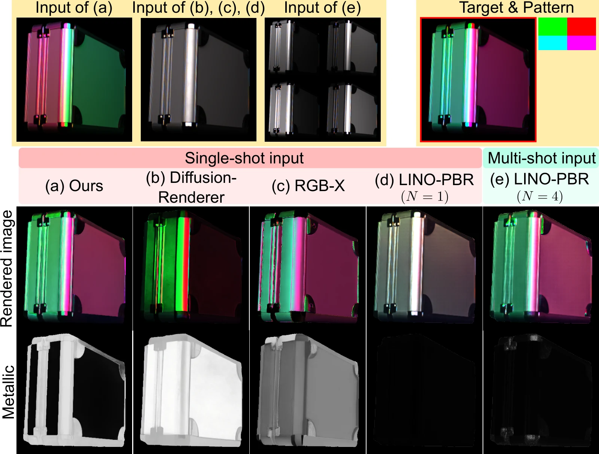
Dielectric–metallic disambiguation. RGB-X and multi-shot LINO-PBR produce visually plausible rendered images but fail to assign consistent metallicity to the metal frame of the case. With the additional CP measurements, our method estimates the metallic region more clearly and consistently.
Input encoding. Each row adds one cue to the previous configuration.
| Variant | Albedo PSNR ↑ | Roughness RMSE ↓ | Metallicity RMSE ↓ | Normal MAE ↓ |
|---|---|---|---|---|
| Uniform white illumination | 21.36 | 0.1166 | 0.3218 | 20.08 |
| + Spectral multiplexing | 21.61 | 0.1024 | 0.3010 | 12.45 |
| + Polarization decomposition | 22.22 | 0.0889 | 0.2889 | 11.97 |
| + CP (ours) | 23.90 | 0.0781 | 0.2395 | 11.45 |
Spectral multiplexing carries most of the directional information, cutting normal MAE from 20.08° to 12.45°. Polarization decomposition mainly sharpens albedo and roughness, and the CP cue gives the largest gain in metallicity.
Training reflectance source. Averaged over two held-out test splits.
| Variant | Albedo PSNR ↑ | Roughness RMSE ↓ | Metallicity RMSE ↓ | Normal MAE ↓ |
|---|---|---|---|---|
| Analytic pBRDF | 17.14 | 0.2044 | 0.2885 | 14.81 |
| Expanded pBRDF (ours) | 18.06 | 0.1520 | 0.2836 | 18.14 |
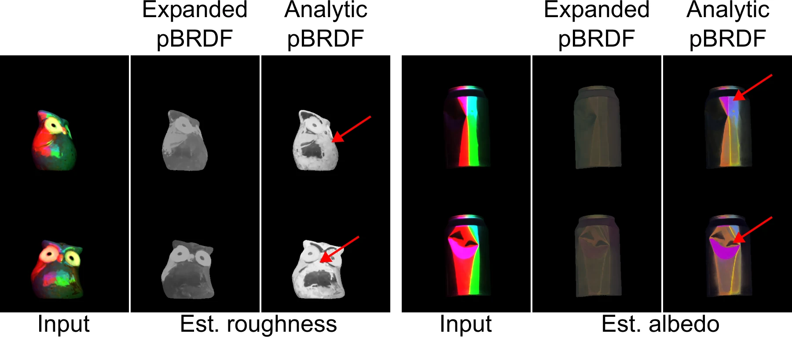
Ablation on the expanded pBRDF dataset. Unlike our measured-pBRDF-based expansion, training on analytic pBRDFs fails to faithfully disentangle real-world light–material interactions.
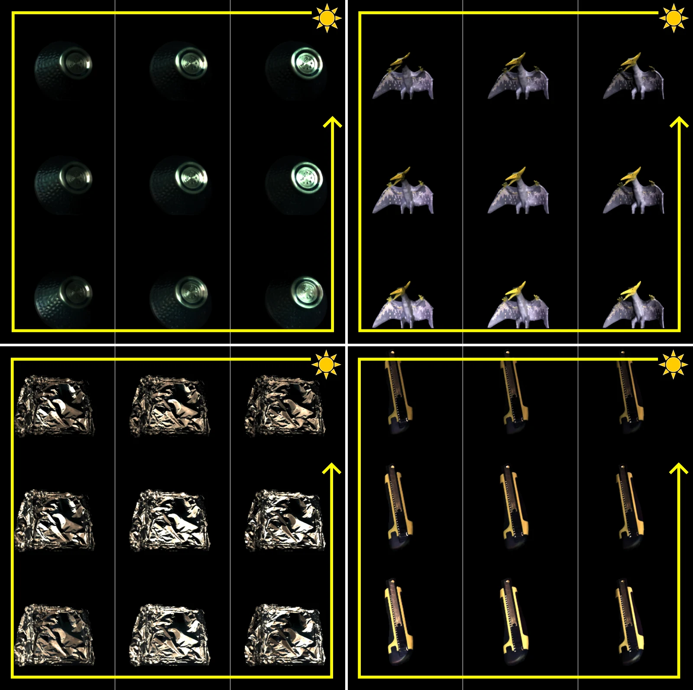
Relighting under a rotating point light. Highlights smoothly follow the illumination direction, while material appearance remains stable.
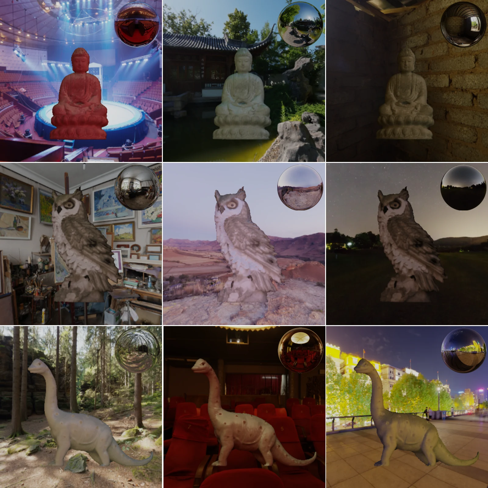
Relighting under environment maps. Rendered under environments that differ substantially from the display illumination used during capture. Material identity stays consistent and highlights stay coherently oriented, blending naturally with the composited backgrounds.
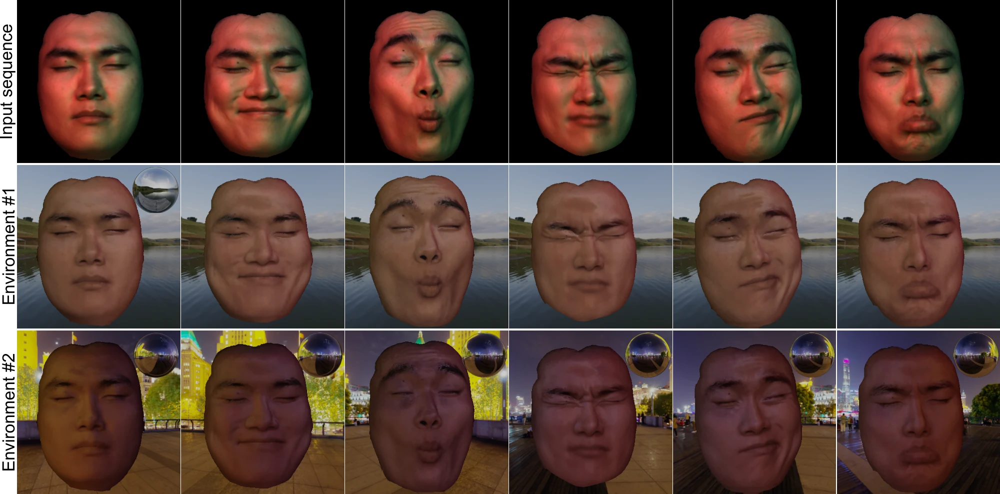
Relighting a dynamic face sequence. Snapshot acquisition enables frame-wise relighting of dynamic scenes, where multi-frame capture would require temporal alignment or registration under facial motion. We apply our feed-forward pipeline independently to each frame of a non-rigid face sequence and relight the predictions under environment illumination. The results maintain consistent reflectance across motion and varying illumination.
@article{choi2026snapshot,
title = {Snapshot Polarimetric Display Inverse Rendering},
author = {Choi, Seokjun and Moon, Yunseong and Kang, Kaizhang and Chung, Hoon-Gyu
and Kim, Jin-Nyeong and Nam, Giljoo and Baek, Seung-Hwan},
journal = {ACM Transactions on Graphics},
volume = {45},
number = {6},
articleno = {201},
year = {2026},
doi = {10.1145/3842531}
}